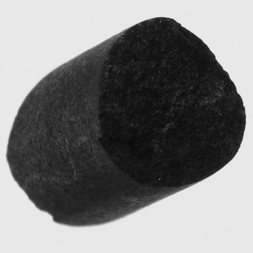
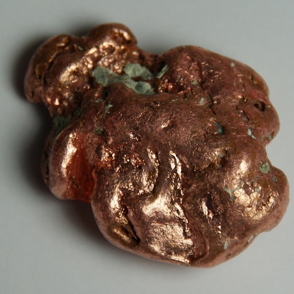
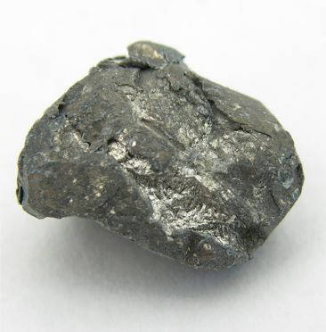
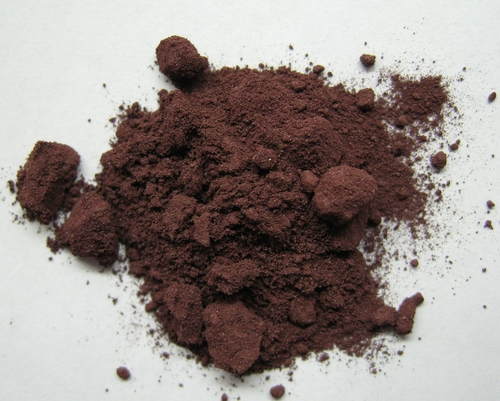
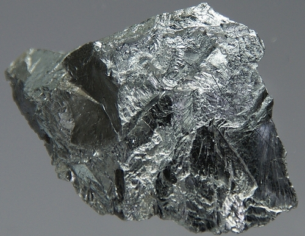

<div class="container matterandmaterials"><div id="contents" class="col-md-12 main-content"><span  class="ch-nr-4"/>
        <div  class="section"><h1 class="title" id="toc-id-0">The Periodic Table of Elements</h1><div class="teachers-guide">
<p><strong>Chapter overview</strong></p>

<p>2 weeks are allowed for this chapter. In this chapter learners are introduced to the Periodic Table of elements for the first time. They will learn about the main features of the Periodic Table and where the three categories of elements - metals, non-metals and semi-metals (also called the metalloids) - can be found. They will also learn that elements are arranged on the table according to their atomic numbers, starting with hydrogen (atomic number 1) at the top left hand corner and continuing from left to right across the table. We will deal with atomic number from the point of view that it <em>shows</em> the position of a given element on the Periodic Table. In reality the atomic number <em>determines</em> (rather than shows) the position of a given element on the table.</p>

<p>Some important issues to note at this stage, namely:</p>
<ol data-class="ListEnumerated"><li>The <strong>atom</strong> is only introduced in Gr. 8 in CAPS, whereas it was felt that some information on the atom was crucial at this stage to understand atomic numbers. Therefore, some information on the atom has been included as an introduction. However, the approach here has been to look at the Periodic Table as a means of <strong>classifying</strong> the elements. We are approaching it in the same way scientists did historically, namely, that they <strong>observed</strong> similarities and differences in elements and then used this information to arrange the elements in the table. Only later on when the model of the atom was further developed were scientists able to explain <em>why</em> elements are arranged as they are on the table. This same <strong>empirical approach</strong> has been used here to introduce the Periodic Table.</li>
<li>The meaning of the term <strong>atomic number</strong> (the number of protons in an atom of a given element). This is because the subatomic particles protons, neutrons and electrons will only be introduced later (in Gr. 8 Matter and Materials). This is when they will formally learn that the atomic number indicates the number of protons in an atom. However, as indicated in point 1 above, we have included some information on the atom and subatomic particles here in Gr. 7.</li>
<li>The detailed arrangement of the heavier atoms at the bottom of the table is not dealt with at this stage. This is considered too complex for learners in Gr. 7.</li>
</ol><p/>

<p>4.1 Arrangement of elements on the Periodic Table (2 hours)</p>

<p/>
<table><tr><td><p><strong>Tasks</strong></p></td><td><p><strong>Skills</strong></p></td><td><p><strong>Recommendation</strong></p></td></tr><tr><td><p>Activity: Comparing Mendeleev's table with the modern version of the Periodic Table</p></td><td><p>Accessing and recalling information, comparing,</p></td><td><p>Suggested</p></td></tr><tr><td><p>Activity: Periodic Table treasure hunt</p>

                
<p/></td><td><p>Accessing and recalling information, observing,</p></td><td><p>Suggested</p></td></tr></table><p/>

<p>4.2 Properties of metals, semi-metals and non-metals (4 hours)</p>

<p/>
<table><tr><td><p><strong>Tasks</strong></p></td><td><p><strong>Skills</strong></p></td><td><p><strong>Recommendation</strong></p></td></tr><tr><td><p>Activity: What do some of the elements look like?</p>

                
<p/></td><td><p>Sorting and classifying, observing,  identifying elements and properties, comparing</p></td><td><p>Suggested</p></td></tr><tr><td><p>Activity: Blitz revision of the properties of metals and non-metals</p>

                
<p/></td><td><p>Sorting and classifying, identifying properties, comparing</p></td><td><p>Optional revision (suggested)</p></td></tr><tr><td><p>Activity: Classifying element X</p>

                
<p/></td><td><p>Accessing and recalling information, reading, observing, identifying properties</p></td><td><p>Suggested</p></td></tr><tr><td><p>Activity: The regions of the Periodic Table</p>

                
<p/></td><td><p>Accessing and recalling information, sorting and classifying, comparing</p></td><td><p>CAPS suggested</p></td></tr><tr><td><p>Activity: Uses of the elements</p></td><td><p>Accessing and recalling information, communicating, group work, making a poster</p></td><td><p>CAPS suggested</p></td></tr></table><p/>
</div>
<p/>
<div class="note  col-md-10" data-type="keyquestions"><ul data-class="ListBulleted"><li>What is an element?</li>
<li>How can we classify the elements in our world?</li>
<li>Which table helps us to make sense of the patterns we observe in the chemical properties of the elements?</li>
<li>How are elements arranged on the Periodic Table?</li>
<li>What does the position of an element on the Periodic Table tell us about its expected properties?</li>
<li>What information can we use to represent the identity of an element?</li>
<li>What are the typical properties of the<ul data-class="ListBulleted"><li>metals;</li>
<li>nonmetals; and</li>
<li>semi-metals?</li>
</ul></li>
</ul></div>
<p/>
<div class="note  col-md-6" data-type="visit">
<p>A video to introduce us to elements and to the Periodic Table<a data-class="ExternalLink" href="http://bit.ly/16C5ZyC">bit.ly/16C5ZyC</a></p>
</div>
<p/>
<div class="teachers-guide">
<p>The video in the above link is an entertaining and simple way to introduce learners to the subject matter of this chapter about elements and the Periodic Table. It briefly explains what an element is, introduces Dmitri Mendeleev and his arrangement of the Periodic Table and also explains some of the concepts discussed later on in the chapter.</p>
</div>
<p/>

<p>People have been interested in science from the earliest times. Early man discovered how to process natural ores into metals for ornaments, weapons and tools. At least 3000 years ago, ancient people were already using embalming fluids (chemicals) obtained from plants to preserve the bodies of dead people and animals!</p>
<figure><figcaption class="caption">An ancient Egyptian mummy that has been embalmed to preserve it.</figcaption></figure><p/>

<p>Mankind has been studying and experimenting with materials to try to understand matter for thousands of years. Scientists especially, wanted some understanding of all the different substances that they were working with.</p>

<p/>

<p>Over time, many different elements were discovered by scientists all over the world. These elements make up all the materials around us. But what do we mean by the word element? An element is a pure substance which cannot be broken down any further. We will find out more about elements in this chapter.</p>

<p/>

<p>Over time, our knowledge about the elements and their behaviour increased and scientists recognised the need to organise this information. They began to observe patterns and similarities in the way some groups of elements behaved and recorded these observations. Scientists wanted some way to <strong>classify</strong> the elements according to their properties that they were observing.</p>

<p/>
<figure><figcaption class="caption">Alchemists, experimenting with materials in their laboratory.</figcaption></figure><p/>

<p>The version of the Periodic Table that we use today was first proposed by Dmitri Ivanovich Mendeleev in 1872. Mendeleev was a brilliant Russian scientist. While other scientists made many contributions to the design of the Periodic Table, Mendeleev was the one who first showed that the table could predict the existence and properties of elements that were still undiscovered at the time.</p>

<p/>
<div class="note  col-md-6" data-type="visit">
<p>An interesting video that tells us about how scientists solved the puzzle of the Periodic Table.<a data-class="ExternalLink" href="http://bit.ly/1cMGnSw">bit.ly/1cMGnSw</a></p>
</div>
<p/>
<figure><figcaption class="caption">Dmitri Mendeleev.</figcaption></figure><p/>
<div class="note  col-md-6" data-type="visit">
<p>This video tells us more about how Dmitri Mendeleev listed and arranged the elements on the Periodic Table and why this was such an important event in the history of science as we know it.<a data-class="ExternalLink" href="http://bit.ly/147Ql9f">bit.ly/147Ql9f</a></p>
</div>
<p/>
<div class="teachers-guide">
<p>Mendeleev's original table is not part of what learners are required know, but has been included to give learners a sense of the pace of scientific discovery. In order to make learners aware that scientific discovery can sometimes be a slow process, you could point out the gaps that are evident on Mendeleev's Periodic Table (e.g. elements 44, 68 and 72). These gaps represented elements that were not known at the time, but have been discovered since.</p>
</div>
<p/>
<div class="section"><h2 class="title" id="toc-id-1">Arrangement of elements on the Periodic Table</h2><div class="teachers-guide">
<p>This website contains an interactive version of the Periodic Table. It is a wonderful tool to show some of the trends and information that the Periodic Table contains. This website can also be used in the later grades when the Periodic Table is covered again, in more detail. For now, it is a useful teaching tool to give an overview<a data-class="ExternalLink" href="http://rsc.li/195tO2e">rsc.li/195tO2e</a>.</p>

<p/>

<p>Another interesting website which contains mostly photos of the elements is <a data-class="ExternalLink" href="http://bit.ly/1euHmVi">bit.ly/1euHmVi</a> This is a very useful site to illustrate to learenrs what elements actually are.</p>
</div>
<p/>
<div class="note  col-md-6" data-type="newwords"><ul data-class="ListBulleted"><li>element</li>
<li>Periodic Table</li>
<li>symbol (or element symbol)</li>
<li>atomic number</li>
</ul></div>
<p/>
<div class="note  col-md-6" data-type="visit">
<p>A tour of the Periodic Table<a data-class="ExternalLink" href="http://bit.ly/147Qzgx">bit.ly/147Qzgx</a></p>
</div><div class="teachers-guide">
<p>The video above includes a bit more history about Dmitri Mendeleev, reviews Mendeleev's organisation of the period table and then moves on to relationships of elements on the Periodic Table. Just before the end of the video, the host mentions the importance of electrons (to be discussed in another video). Atoms, electrons and protons are concepts that are only discussed in Gr. 8.</p>
</div>
<p/>
<div class="note  col-md-6" data-type="takenote">
<p>In Life and Living, we looked at the classification of living organisms in our world. Now in Matter and Materials, we are looking at the classification system for elements!</p>
</div>
<p/>

<p>The Periodic Table is a classification system for the elements that make up the matter and materials in our world. Today, there are more than 100 different elements known! Each element has its own name, symbol, atomic number and position on the Periodic Table.</p>

<p/>
<div class="section"><h3 class="title" id="toc-id-2">Element names</h3>
<p/>
<div class="note  col-md-6" data-type="didyouknow">
<p>Hafnium takes its name from the Latin name for Copenhagen, which is<em>Hafnia</em>, as the element was discovered by two scientists working in Copenhagen at the time.</p>
</div>
<p/>

<p>What is your name? Perhaps it is Thando. Or David. Or Megan. Perhaps you are lucky enough to be the only person in your class with that name. Perhaps you are lucky enough to be the only person in the world with that name! That would make your name unique.</p>

<p/>

<p>Each element has a unique name. We can think of each name as a unique 'label' we can use to identify the element. There are two other unique labels that we can use to identify elements. They are the chemical symbol and the atomic number. We will learn more about these in the next section. Each element has some of its own unique properties and later on we will see that those with some similar properties can be grouped together.</p>

<p/>
<div class="note  col-md-6" data-type="visit">
<p>There are TWO songs to help you remember the elements of the Periodic Table:<a data-class="ExternalLink" href="http://bit.ly/18d0bLl">bit.ly/18d0bLl</a> and <a data-class="ExternalLink" href="http://bit.ly/11OuoPM">bit.ly/11OuoPM</a>. Which one is your favourite? Can you learn one (or both) of them?</p>
</div>
<p/>
<figure><figcaption class="caption">The Periodic Table of elements as it is today.</figcaption></figure><p/>
<div class="note  col-md-6" data-type="takenote">
<p>There is a bigger version of the modern Periodic Table of elements on the inside cover of your workbook. You can use it for easy reference.</p>
</div>
<p/></div><div class="section"><h3 class="title" id="toc-id-3">Chemical symbols</h3>
<p/>

<p>If you are a scientist and you work with elements every day, writing out the names can become very tedious. To make writing about elements easier, scientists have given each element a short <strong>symbol.</strong> To make sure we do not become confused with different elements when we write about them, the symbol for each element must be unique, just like its name is.</p>

<p/>

<p>The names and symbols for some common elements are shown in the following table.</p>

<p/>
<div class="note  col-md-6" data-type="takenote">
<p>You need to know the names and symbols of these elements listed here.</p>
</div>
<p/>
<table><tr><td><p><strong>Element</strong></p></td><td><p><strong>Symbol</strong></p></td><td><p><strong>Element</strong></p></td><td><p><strong>Symbol</strong></p></td></tr><tr><td><p>Aluminium</p></td><td><p>Al</p></td><td><p>Magnesium</p></td><td><p>Mg</p></td></tr><tr><td><p>Bromine</p></td><td><p>Br</p></td><td><p>Nitrogen</p></td><td><p>N</p></td></tr><tr><td><p>Calcium</p></td><td><p>Ca</p></td><td><p>Oxygen</p></td><td><p>O</p></td></tr><tr><td><p>Carbon</p></td><td><p>C</p></td><td><p>Phosphorus</p></td><td><p>P</p></td></tr><tr><td><p>Chlorine</p></td><td><p>Cl</p></td><td><p>Potassium</p></td><td><p>K</p></td></tr><tr><td><p>Copper</p></td><td><p>Cu</p></td><td><p>Silicon</p></td><td><p>Si</p></td></tr><tr><td><p>Gold</p></td><td><p>Au</p></td><td><p>Silver</p></td><td><p>Ag</p></td></tr><tr><td><p>Hydrogen</p></td><td><p>H</p></td><td><p>Sodium</p></td><td><p>Na</p></td></tr><tr><td><p>Iodine</p></td><td><p>I</p></td><td><p>Sulfur</p></td><td><p>S</p></td></tr><tr><td><p>Iron</p></td><td><p>Fe</p></td><td><p>Tin</p></td><td><p>Sn</p></td></tr><tr><td><p>Lead</p></td><td><p>Pb</p></td><td><p>Zinc</p></td><td><p>Zn</p></td></tr></table><p/>

<p>The symbol for carbon is C, the symbol for sulfur is S and the symbol for nitrogen is N. It is easy to see why these symbols were chosen: they simply represent the first letter of each name. This letter is always capitalised (upper case).</p>

<p/>

<p>What happens when the different elements all start with the same letter? For example: calcium, carbon, chlorine and copper all start with the letter 'C'! To ensure they all have a unique symbol, a second letter was added to their symbol. This letter is always a small letter (lower case).</p>

<p/>

<p>Some chemical symbols are more difficult to understand. Na, for example, is the symbol for sodium. The Na comes from the Latin name for sodium, which is <em>natrium</em>. These symbols were chosen very long ago, when many subjects were studied in Latin. Can you imagine how difficult that must have been?!</p>

<p/>

<p>Some simple rules to remember when using chemical symbols:</p>
<ol data-class="ListEnumerated"><li>Every element has its own, unique symbol.</li>
<li>The symbol is usually (but not always) the first one or two letters of the name of the element.</li>
<li>The first letter of the symbol is always a capital letter.</li>
<li>If the symbol has two letters, the second letter is always a small letter.</li>
<li>Some elements have symbols that come from their Latin names.</li>
</ol><p/>
<div class="note  col-md-6" data-type="didyouknow">
<p>The symbol for lead (Pb) comes from plumbum, the Latin word for lead. For many years, lead was used to make water pipes. This is also where the word plumber comes from.</p>
</div></div><div class="section"><h3 class="title" id="toc-id-4">Atomic numbers</h3><div class="teachers-guide">
<p>This site contains an interactive explanation of the history of the Periodic Table and the atom and explains how the concepts are related. It contains more information than learners need at this level, but you can read through it as an extension:<a data-class="ExternalLink" href="http://bit.ly/132Nzbh">bit.ly/132Nzbh</a> .</p>

<p/>

<p><strong><u>Important note:</u></strong> We have briefly introduced the atom here, (although it was not specified in CAPS), so that the idea of the atomic number makes sense and is not just an abstract number. However, these concepts will be explored further in Gr. 8. For now it is important the learners understand that each element has a unique atomic number and that the Periodic Table of elements is a way of classifying the elements so that they are grouped together in terms of similar properties.</p>

<p/>

<p>When introducing the <strong>subatomic particles</strong>, you can draw the model of the atom on the board if you would like to show this to your learners. However, it is not crucial that learners understand the arrangement of the subatomic particles at this stage. Here is a simple model of the atom which you can illustrate on the board:</p>

<p/>
<figure id="gd-idp4674288"></figure><p>(This model here illustrates nitrogen atoms as there are 7 protons. Take note that there are equal numbers of protons and neutrons. Together they make up the nucleus of the atom. Protons have a positive charge, electrons have a negative charge, and neutrons are neutral. If the number of electrons equals the number of protons, then the atom is neutral and does not have a charge. The atom can gain or lose electrons resulting in a charge, and it is then called an ion.)</p>
</div>
<p/>

<p>If you look at the Periodic Table, you will see that each element also has a unique number. This is called the <strong>atomic number</strong>. To properly understand what the atomic number is, we need to know what an <strong>atom</strong> is. We will learn more about atoms in Gr. 8, but for now, let's briefly go back to our history lesson!</p>

<p/>

<p>Do you remember we said Mendeleev developed the first periodic table in 1869? Well before that, at the beginning of the 1800's, a man by the name of John Dalton said that all matter is made up of very small particles called atoms. These atoms vary in mass and size. Do you remember we said an element is a pure substance? We can now also say that an element is a substance that contains <em>only one particular type of atom.</em> The atoms of one element are different from the atoms of any other element.</p>

<p/>
<div class="note  col-md-6" data-type="takenote">
<p>You do not need to know about the atom in detail for now. We will learn more about this in Gr. 8!</p>
</div>
<p/>

<p>All atoms are made up of even smaller particles which we call subatomic particles. These are protons, neutrons and electrons. All you must remember for now is that the protons, electrons, and neutrons of one element <em>are exactly the same</em> as the protons, electrons, and neutrons of any other element. It is their number and arrangement that make the elements different.</p>

<p/>

<p>The atomic number of an element refers to <em>how many protons</em> that element has in its atoms. Since each element has a different number of protons in its atoms, each element also has a unique atomic number.</p>

<p/>

<p>Have a look at the Periodic Table. What is the atomic number of hydrogen? How many protons are there in its atoms? </p><hr/><div class="teachers-guide">
<p>Hydrogen has atomic number 1 and therefore has 1 proton.</p>
</div>
<p/>

<p>What is the atomic number of carbon? How many protons are there in its atoms? </p><hr/><div class="teachers-guide">
<p>Carbon's atomic number is 6. It has 6 protons in its atoms.</p>
</div>
<p/>

<p>Can you see how the elements are arranged so that their atomic numbers increase from left to right across the Periodic Table? This is not a coincidence! When Mendeleev first created the Periodic Table, he arranged the 60 elements that he knew of at the time in order of increasing mass. He then saw that there was a regular pattern in other characteristics of these elements. Mendeleev then grouped them into columns and rows according to their properties. These were physical and chemical properties which the scientists had observed from doing many different experiments. This resulted in the arrangement of the elements on the Periodic Table.</p>

<p/>
<figure><figcaption class="caption">Mendeleev's Periodic Table from 1872. The spaces marked with blank lines represent elements that Mendeleev thought existed, but they were not yet discovered at the time, so he left places for them.</figcaption></figure><p/>
<div class="note  col-md-6" data-type="takenote">
<p>When things show a regular, repeating pattern, we say it is<strong>periodic</strong>. When the elements were arranged in order of increasing mass, Mendeleev observed a pattern in their properties, which allowed him to arrange the elements into rows and columns in a table, the <strong>Periodic</strong> Table. Elements in the same rows and columns in the table, have similar properties to each other.</p>
</div>
<p/>
<div class="note  col-md-6" data-type="visit">
<p>A game to learn about the Periodic Table<a data-class="ExternalLink" href="http://bit.ly/15QkMHn">bit.ly/15QkMHn</a></p>
</div>
<p/>

<p>The Periodic Table that we use today looks a lot more modern than Mendeleev's original version. You will notice that there are no empty blocks in the modern version of the table. That tells us that all the elements that were still undiscovered in Mendeleev's lifetime, are now known.</p>

<p/>

<p>In the next activity, we will compare Mendeleev's original Periodic Table with the version that we use today. This will help show us how scientific discovery is sometimes a slow process.</p>

<p/>
<div class="activity" data-type="Activity"><h1 class="title">Comparing Mendeleev's table with the modern version of the Periodic Table</h1><div class="teachers-guide">
<p>This is an optional, extension activity.</p>
</div>
<p>When Mendeleev first arranged the elements according to their mass and their properties, it resulted in there being some gaps in the rows. But, as a good scientist, Mendeleev did not see this as a problem! Instead, he thought it simply meant that there were elements that had not been discovered yet. And he was right!</p>

<p/>

<p>Mendeleev put a blank line and the atomic number to show that he thought there is an element which should go there, but it had not been discovered. Look carefully at Mendeleev's original table. See if you can find where it says '_ = 44' in the table.</p>

<p/>

<p>See if you can find the 2 other elements that had not been discovered at that time. Write their numbers down in the space below. </p><hr/><div class="teachers-guide">
<p>They are 68 and 72.</p>
</div>
<p/>

<p>Now look at the modern version of the Periodic Table. Can you find the elements with these numbers? What are their symbols? What are their names? Write your answers in the table provided.</p>

<p/>

<p>As an extension of this activity you could look up the names of these elements, and research when they were discovered, and add this information to the table.</p>
<div class="teachers-guide">
<p>This final task could be shared in groups of 3 or 6 learners, who could then bring their data to class where it can be pooled. If the dates for each element do not correspond exactly, it provides an opportunity to discuss the validity of information. When is data 'the truth'? Can we always believe what we read? When is a source of data reliable?</p>
</div>
<p/>
<table><tr><td><p><strong>Number of the element</strong></p></td><td><p><strong>Symbol of the element</strong></p></td><td><p><strong>Name of the element</strong></p></td><td><p><strong>When was this element discovered?</strong></p></td></tr><tr><td><p/></td><td><p/></td><td><p/></td><td><p/></td></tr><tr><td><p/></td><td><p/></td><td><p/></td><td><p/></td></tr><tr><td><p/></td><td><p/></td><td><p/></td><td><p/></td></tr></table><p/>
<div class="teachers-guide">
<p/>
<table><tr><td><p><strong>Number of the element</strong></p></td><td><p><strong>Symbol of the element</strong></p></td><td><p><strong>Name of the element</strong></p></td><td><p><strong>When was this element discovered?</strong></p></td></tr><tr><td><p>44</p></td><td><p>Ru</p></td><td><p>Ruthenium</p></td><td><p>1844</p></td></tr><tr><td><p>68</p></td><td><p>Er</p></td><td><p>Erbium</p></td><td><p>1843</p></td></tr><tr><td><p>72</p></td><td><p>Hf</p></td><td><p>Hafnium</p></td><td><p>1923</p></td></tr></table><p/>
</div>
<p/>
</div>

<p/>

<p>In the next activity we are going to use our new knowledge of element symbols and atomic numbers to hunt for a very valuable 'treasure'. We will find the treasure by following some clues about the Periodic Table.</p>

<p/>
<div class="activity" data-type="Activity"><h1 class="title">Periodic Table treasure hunt</h1><div class="teachers-guide">
<p>This is a fun activity aimed at getting learners to interact with the Periodic Table and learn the names and symbols of the first 20 elements.</p>
</div>
<p/>

<p>Your job is to follow the clues, in order to find the treasure. The instructions will help you to spell out the name of the treasure in the blocks below.</p>

<p/>
<div class="exercises"><div class="problemset"><div class="entry"><div class="problem">Clue 1: What is the symbol for carbon (atomic number 6)? Write this symbol in the first block above.</div><div class="solution">
<p/><p>C</p>
</div></div><div class="entry"><div class="problem">Clue 2: Hydrogen is the lightest element. Can you find it on the Periodic Table? Write its symbol in the second block.</div><div class="solution">
<p/><p>Very first element on the Periodic Table (top left). The symbol for hydrogen is H.</p>
</div></div><div class="entry"><div class="problem">
<p>Clue 3: Which element represents the gas that we breathe to stay alive? Here is a hint: It is represented by atomic number 8. Write its symbol in the third block and give the name of the element below. </p><hr/></div><div class="solution">
<p/><p>O (oxygen)</p>
</div></div><div class="entry"><div class="problem">
<p>Clue 4: This element is in the fourth row and the ninth column of the Periodic Table. It is a metal that is used in magnets. Write its symbol in the fourth block. Do you know its name? Write its name below. </p><hr/></div><div class="solution">
<p/><p>Co (cobalt)</p>
</div></div><div class="entry"><div class="problem">
<p>Clue 5: This element is represented by atomic number 57. Write its symbol in the fifth block. See if you can find out the name of this element and write it down below. </p><hr/></div><div class="solution">
<p/><p>La (lanthanum)</p>
</div></div><div class="entry"><div class="problem">
<p>Clue 6: This element is represented by atomic number 52. It is a semi-metal that is used in the manufacture of solar panels. Write its symbol in the last (sixth) block. See if you can find out the name of this element and write it down below. </p><hr/></div><div class="solution">
<p/><p>Te (tellurium)</p>
</div></div><div class="entry"><div class="problem">
<p>What is the 'treasure' that you have found? </p><hr/></div><div class="solution">
<p/><p>Chocolate</p>
</div></div></div></div>

<p/>
<table><tr><td><p/></td><td><p/></td><td><p/></td><td><p/></td><td><p/></td><td><p/></td></tr></table><div class="teachers-guide">
<p/>
<table><tr><td><p>C</p></td><td><p>H</p></td><td><p>O</p></td><td><p>Co</p></td><td><p>La</p></td><td><p>Te</p></td></tr></table><p>It is important to point out to learners that this is not a 'formula' for chocolate, but simply a fun activity aimed at finding elements on the Periodic Table. Later we will learn how to put element symbols together into formulae that represent actual compounds.</p>
</div>
<p/>

<p>Complete the following sentence by replacing the names of the elements with chemical symbols. You would have to look up some of the symbols! </p><hr/><hr/><p/>

<p>SCIENCE...Fluorine Arsenic Carbon Iodine Nitrogen Astatine Einsteinium... ME!</p>
<div class="teachers-guide">
<p>Science... F As C I N At Es (fascinates)... me!</p>
</div>
<p/>

<p>Complete the following table to see how many of the names and symbols of the elements you remember. Try to do this without referring to the Periodic Table.</p>

<p/>
<table><tr><td><p><strong>Element</strong></p></td><td><p><strong>Symbol</strong></p></td><td><p><strong>Element</strong></p></td><td><p><strong>Symbol</strong></p></td></tr><tr><td><p/></td><td><p>Al</p></td><td><p/></td><td><p>Mg</p></td></tr><tr><td><p>Bromine</p></td><td><p/></td><td><p/></td><td><p>N</p></td></tr><tr><td><p>Calcium</p></td><td><p/></td><td><p>Oxygen</p></td><td><p/></td></tr><tr><td><p/></td><td><p>C</p></td><td><p>Phosphorus</p></td><td><p/></td></tr><tr><td><p/></td><td><p>Cl</p></td><td><p/></td><td><p>K</p></td></tr><tr><td><p>Copper</p></td><td><p/></td><td><p/></td><td><p>Si</p></td></tr><tr><td><p/></td><td><p>Au</p></td><td><p>Silver</p></td><td><p/></td></tr><tr><td><p/></td><td><p>H</p></td><td><p/></td><td><p>Na</p></td></tr><tr><td><p>Iodine</p></td><td><p/></td><td><p>Sulfur</p></td><td><p/></td></tr><tr><td><p/></td><td><p>Fe</p></td><td><p>Tin</p></td><td><p/></td></tr><tr><td><p>Lead</p></td><td><p/></td><td><p/></td><td><p>Zn</p></td></tr></table><p/>
<div class="teachers-guide">
<p/>
<table><tr><td><p><strong>Element</strong></p></td><td><p><strong>Symbol</strong></p></td><td><p><strong>Element</strong></p></td><td><p><strong>Symbol</strong></p></td></tr><tr><td><p>Aluminium</p></td><td><p>Al</p></td><td><p>Magnesium</p></td><td><p>Mg</p></td></tr><tr><td><p>Bromine</p></td><td><p>Br</p></td><td><p>Nitrogen</p></td><td><p>N</p></td></tr><tr><td><p>Calcium</p></td><td><p>Ca</p></td><td><p>Oxygen</p></td><td><p>O</p></td></tr><tr><td><p>Carbon</p></td><td><p>C</p></td><td><p>Phosphorus</p></td><td><p>P</p></td></tr><tr><td><p>Chlorine</p></td><td><p>Cl</p></td><td><p>Potassium</p></td><td><p>K</p></td></tr><tr><td><p>Copper</p></td><td><p>Cu</p></td><td><p>Silicon</p></td><td><p>Si</p></td></tr><tr><td><p>Gold</p></td><td><p>Au</p></td><td><p>Silver</p></td><td><p>Ag</p></td></tr><tr><td><p>Hydrogen</p></td><td><p>H</p></td><td><p>Sodium</p></td><td><p>Na</p></td></tr><tr><td><p>Iodine</p></td><td><p>I</p></td><td><p>Sulfur</p></td><td><p>S</p></td></tr><tr><td><p>Iron</p></td><td><p>Fe</p></td><td><p>Tin</p></td><td><p>Sn</p></td></tr><tr><td><p>Lead</p></td><td><p>Pb</p></td><td><p>Zinc</p></td><td><p>Zn</p></td></tr></table><p/>
</div>
<p/>
</div>

<p/>
<div class="note  col-md-6" data-type="didyouknow">
<p>The Periodic Table is made up of 103 elements, but only 90 of the elements occur in nature. The rest have been made by man.</p>
</div></div></div><div class="section"><h2 class="title" id="toc-id-5">Properties of metals, semi-metals and non-metals</h2>
<p/>

<p><strong>New words</strong></p>
<ul data-class="ListBulleted"><li>semi-metal</li>
<li>semi-conductor</li>
</ul><p/>

<p>The Periodic Table is an amazing tool! Did you know that the position of an element on the Periodic Table can tell a scientist what properties the element can be expected to have? This is because the elements have not just been arranged randomly! But, rather, they are grouped and arranged according to similar properties. Let's find out what this means.</p>

<p/>
<div class="activity" data-type="Activity"><h1 class="title">What do some of the elements look like?</h1><div class="teachers-guide">
<p>We suggest doing this activity when you start to look at the arrangement of elements into metals, non-metals and semi-metals on the Periodic Table. This kind of activity is important to learners at this stage so that they understand that elements are actual substances that they can see. Often, learners battle to grasp the concept that elements are substances in the world around us that we can see.</p>

<p/>

<p><strong>Instructions for you to do this activity:</strong></p>
<ol data-class="ListEnumerated"><li>If possible, collect actual samples of the elements in this activity. You do not need all of the elements, but at least some of them listed here in the activity. You can use materials that you find around you such as a piece of coal or graphite stick (for carbon), a piece of copper piping, a tube with sulfur powder, a bottle of iodine solution from the chemist, a piece of aluminium foil, an iron/steel nail, etc.</li>
<li>Once you have collected your samples, preferably in little containers, arrange them on the table up front.</li>
<li>Next, stick up a blank cardboard cut out of the Periodic Table. You will need to create this yourself. You can draw out the table large on a sheet of cardboard, or else you can print one on a large piece of paper. There are many different websites where you can download blank Periodic Tables, such as this one: <a data-class="ExternalLink" href="http://bit.ly/132NDb7">bit.ly/132NDb7</a>. A blank Periodic Table has also been provided in the workbook for learners to write the symbols of the elements you discuss if you are not able to obtain samples and produce a large cardboard print out. They can still do this even if you do have the print out at the front of the class.</li>
<li>Then, go through the different elements that you have. Pass the sample around the class, or get learners to come up to your desk to look at them.</li>
<li>Ask for a volunteer from the class to come select an element and find its place on the Periodic Table by looking at the one in their workbooks. They must then stick the sample into the correct square on the blank cardboard table. Use adhesive tape or Prestik.</li>
<li>Do this for as many samples as you have. You can also print out some colour photos of different elements to do some more. Here is a website where you can download public domain images of the elements and print them: <a data-class="ExternalLink" href="http://bit.ly/19PEEw3">bit.ly/19PEEw3</a>.</li>
<li>if you do not have actual samples, or colour print outs, some images have been provided in the workbooks which you can refer to, and then just write the symbols on the cardboard cut out.</li>
<li>Once you have done this for as many samples as you have, ask learners to describe what the elements on the left hand side of the table look like, and what those on the right hand side look like. This is the introduction to metals and non-metals. They should be able to see that those on the left are generally shiny and metallic (as they are metals), and those on the right are generally in powder form, brittle, dull, colourful, etc (as they are non-metals.</li>
<li>Learners must then answer the questions that follow at the end of the activity.</li>
</ol><p/>
</div>
<p/>

<p><strong>INSTRUCTIONS:</strong></p>
<ol data-class="ListEnumerated"><li>Your teacher will guide you through this activity. You will either look at real samples of some of the elements, or else refer to the photos below of some of the elements.</li>
<li>Your task as a class is to identify the different elements and find their place on the Periodic Table. You will either stick the real samples onto a large blank Periodic Table, or use the blank one here in your workbook, or both.</li>
<li>You must then look at what the different elements look like and see if you can identify any similar properties. The questions at the end will help guide you through this.</li>
</ol><p/>

<p><strong>Here are some photos of the different elements:</strong></p>
<figure><figcaption class="caption">Aluminium foil. <a href="http://images-of-elements.com/aluminium.php"> http://images-of-elements.com/aluminium.php </a></figcaption></figure><figure><figcaption class="caption">Carbon (graphite). <a href="http://images-of-elements.com/carbon.php"> http://images-of-elements.com/carbon.php </a></figcaption></figure><figure><figcaption class="caption">Copper. <a href="http://images-of-elements.com/copper.php"> http://images-of-elements.com/copper.php </a></figcaption></figure><figure><figcaption class="caption">Magnesium.</figcaption></figure><figure><figcaption class="caption">Sulfur.</figcaption></figure><figure><figcaption class="caption">Bromine in tube. <a href="http://images-of-elements.com/bromine.php"> http://images-of-elements.com/bromine.php </a></figcaption></figure><figure><figcaption class="caption">Chlorine gas.</figcaption></figure><figure><figcaption class="caption">Calcium.</figcaption></figure><figure><figcaption class="caption">Phosphorus. <a href="http://commons.wikimedia.org/wiki/File:Phosphor.JPG"> http://commons.wikimedia.org/wiki/File:Phosphor.JPG </a></figcaption></figure><figure><figcaption class="caption">Potassium. <a href="http://commons.wikimedia.org/wiki/File:Potassium.JPG"> http://commons.wikimedia.org/wiki/File:Potassium.JPG </a></figcaption></figure><figure><figcaption class="caption">Nitrogen gas. <a href="http://images-of-elements.com/nitrogen.php"> http://images-of-elements.com/nitrogen.php </a></figcaption></figure><figure><figcaption class="caption">Iron. <a href="http://images-of-elements.com/iron.php"> http://images-of-elements.com/iron.php </a></figcaption></figure><p/>

<p>If you do not have a large cardboard Periodic Table to work with at the front of the class, write the names of the elements you discuss on the blank table provided here:</p>
<figure id="gd-idp7606752"></figure><p/>

<p>After completing this activity, either by sticking actual samples onto a cardboard cut out, or looking at the photos provided here in your workbook and seeing where they are positioned on the Periodic Table, answer these questions.</p>

<p/>

<p><strong>QUESTIONS:</strong></p>
<div class="teachers-guide">
<p>These questions should also be discussed in class. The aim is for learners to see that there is a difference in the elements on the left (and middle) and those on the right of the Periodic Table. In later grades, the concepts of periodicity and the patterns evident in the Periodic Table in the chemical and physical properties of the elements will be explored in much more detail. For now, the emphasis is on the main distinctions between metals and non-metals, and then also semi-metals.</p>
</div><div class="exercises"><div class="problemset"><div class="entry"><div class="problem">
<p>How would you describe the elements that are mostly on the left side of the Periodic Table? </p><hr/><hr/></div><div class="solution">
<p/><p>Learners should note here that these elements look mostly like metals. They have looked at metals in previous grades, and so should be familiar with the properties of metals. They are mostly shiny and hard. Learners could also note the state of these elements, namely that at room temperature they are solids.</p>
</div></div><div class="entry"><div class="problem">
<p>How would you describe the elements that are mostly on the right side of the Periodic Table? </p><hr/><hr/></div><div class="solution">
<p/><p>Learners should note that these elements look distinctly different to the metals on the left and middle of the Periodic Table. They are not shiny and metallic, but rather dull or have a colour. If you are able to use actual real samples, learners might also note that these elements are not as hard and durable as the metals, for example you can show learners how the graphite is brittle, or show them the various powder forms of these elements. Learners should also be able to see that these elements are not all solids, some are liquids and also gases.</p>
</div></div></div></div>

<p/>
</div>

<p/>

<p>You probably saw from the last activity that there is a difference in the elements on the left and right of the Periodic Table. Were you able to identify what these elements are classified as. You have learnt about them before in previous grades. They are <strong>metals</strong> and <strong>non-metals</strong>.</p>

<p/>

<p>Let's do a quick revision of what we have already learnt about metals and non-metals in previous grades.</p>

<p/>
<div class="note  col-md-6" data-type="didyouknow">
<p>Francium (Fr) is the rarest element on Earth. Only 20 to 30 g exists at any one time on Earth in nature!</p>
</div><div class="section"><h3 class="title" id="toc-id-6">The properties of metals and non-metals</h3>
<p/>

<p>Metals and non-metals have distinct properties. That means their properties are unique and different from each other. Can you remember what the unique properties of metals and non-metals are? The next activity will refresh your memory.</p>

<p/>
<div class="activity" data-type="Activity"><h1 class="title">Blitz revision of the properties of metals and non-metals</h1>
<p/>

<p>Below is a block with different properties of metals and non-metals in it. They have been jumbled and are not sorted. You need to decide whether these properties describe metals or non-metals and sort them into the columns in the table which has been provided. Make sure that all the properties in the block are in your table. If you can think of properties that are not listed in the block, you may also add them to the table.</p>

<p/>
<table><tr><td><p><strong>Properties</strong></p>

                    <ul data-class="ListBulleted"><li>shiny</li>
<li>lustrous</li>
<li>dull</li>
<li>brittle</li>
<li>malleable</li>
<li>ductile</li>
<li>conducts electricity</li>
<li>conducts heat</li>
<li>usually a solid</li>
<li>can be solid/liquid/gas</li>
<li>electrical insulator</li>
<li>thermal insulator</li>
<li>(other)</li>
</ul></td></tr></table><p/>

<p>Do the activity as quickly (but also as neatly) as you can, and time yourself!</p>

<p/>
<table><tr><td><p><strong>Properties of metals</strong></p></td><td><p><strong>Properties of non-metals</strong></p></td></tr><tr><td><p/></td><td><p/></td></tr></table><div class="teachers-guide">
<p/>
<table><tr><td><p><strong>Properties of metals</strong></p></td><td><p><strong>Properties of non-metals</strong></p></td></tr><tr><td><p>shiny</p>

                    
<p>lustrous</p>

                    
<p>malleable</p>

                    
<p>ductile</p>

                    
<p>conducts electricity</p>

                    
<p>conducts heat</p>

                    
<p>usually a solid</p></td><td><p>dull</p>

                    
<p>brittle</p>

                    
<p>can be solid/liquid/gas</p>

                    
<p>electrical insulator</p>

                    
<p>thermal insulator</p></td></tr></table><p/>
</div>
<p>Most elements fall into one of these two categories: metals and non-metals. We use the <em>properties</em> of an element to categorise it as a metal or a non-metal.</p>

<p/>

<p>Think of chromium, for example, which is shiny (lustrous), bends easily (malleable) and conducts heat and electricity well.</p>
<figure><figcaption class="caption">A piece of chromium. <a href="http://commons.wikimedia.org/wiki/File:Chromium.jpg"> http://commons.wikimedia.org/wiki/File:Chromium.jpg </a></figcaption></figure><p/>
<div class="exercises"><div class="problemset"><div class="entry"><div class="problem">
<p>What are the properties of chromium? </p><hr/><hr/></div><div class="solution">
<p/><p>Chromium is lustrous, malleable and conducts heat and electricity.</p>
</div></div><div class="entry"><div class="problem">
<p>Based on these properties, would you categorise chromium as a metal or a non-metal? </p><hr/></div><div class="solution">
<p/><p>Chromium is a metal.</p>
</div></div><div class="entry"><div class="problem">
<p>Can you find chromium on the Periodic Table? (Hint: It may help to find its symbol first.) What is its atomic number? </p><hr/></div><div class="solution">
<p/><p>24</p>
</div></div></div></div>

<p/>

<p>Now think of sulfur. Sulfur is usually a dull, yellow powder. It does not conduct electricity or heat well and large crystals of sulfur break easily when they are dropped.</p>

<p/>
<figure><figcaption class="caption">Sulfur crystals forming on a rock wall inside a volcano.</figcaption></figure><p/>
<div class="exercises"><div class="problemset"><div class="entry"><div class="problem">
<p>What are the properties of sulfur? </p><hr/><hr/></div><div class="solution">
<p/><p>Sulfur is dull, brittle and does not conduct electricity or heat well.</p>
</div></div><div class="entry"><div class="problem">
<p>Based on these properties, would you categorise sulfur as a metal or a non-metal? </p><hr/></div><div class="solution">
<p/><p>Sulfur is a non-metal.</p>
</div></div><div class="entry"><div class="problem">
<p>Can you find sulfur on the Periodic Table? (Hint: It may help to find its symbol first.) What is its atomic number? </p><hr/></div><div class="solution">
<p/><p>14</p>
</div></div></div></div>

<p/>
</div>

<p/>

<p>We have now looked at the properties of metals and non-metals. But, when scientists were doing their experiments to observe the properties of the elements, they sometimes found some elements which were difficult to classify as either a metal or a non-metal.</p>

<p/></div><div class="section"><h3 class="title" id="toc-id-7">The properties of semi-metals</h3>
<p/>

<p>Some elements are not quite metals, but they are not quite non-metals either. They just don't fit into either category! Does this sound strange to you? Let us explore.</p>

<p/>
<div class="activity" data-type="Activity"><h1 class="title">Classifying element X</h1>
<p/>

<p>Pretend that you are a member of a team of scientists that has just discovered a new element. The element has not been named yet, so it is simply referred to as 'element X'.</p>

<p/>

<p>The team has a sufficient amount of element X to make several disks of the material. They create a file about element X. In the file, they place the following picture of one of the disks.</p>
<figure><figcaption class="caption">A disk of element X. <a href="http://en.wikipedia.org/wiki/File:Tellurium2.jpg"> http://en.wikipedia.org/wiki/File:Tellurium2.jpg </a></figcaption></figure><p/>

<p>Look carefully at the picture. How would you describe the appearance of element X? </p><hr/><hr/><div class="teachers-guide">
<p>The material (element X) has a shiny, lustrous appearance. It also looks as if there are parallel ridges on the disk.</p>
</div>
<p/>

<p>The team performs experiments on element X and adds the following data to the file:</p>

<p/>
<ol data-class="ListEnumerated"><li>In an attempt to bend a disk of element X, the disk shattered, like glass. The same result was observed when a second disk was dropped from a height.</li>
<li>The material is found to be a poor conductor of heat and electricity at room temperature. Element X was then cooled down significantly by placing it in a freezer. At very low temperatures, it becomes a good conductor of electricity.</li>
</ol><p/>
<div class="note  col-md-6" data-type="takenote">
<p>Room temperature is 25oC.</p>
</div>
<p/>

<p>Fill out the following checklist for element X by placing crosses next to each property that was observed.</p>

<p/>
<table class="no-header"><tr><td><p><strong>Metallic properties</strong></p></td><td><p><strong>YES</strong></p></td><td><p><strong>NO</strong></p></td></tr><tr><td><p>Is the material shiny (lustrous)?</p></td><td><p/></td><td><p/></td></tr><tr><td><p>Is the material malleable and ductile?</p></td><td><p/></td><td><p/></td></tr><tr><td><p>Does the material conduct electricity at room temperature?</p></td><td><p/></td><td><p/></td></tr><tr><td><p>Does the material conduct heat?</p></td><td><p/></td><td><p/></td></tr><tr><td><p><strong>Non-metallic properties</strong></p></td><td><p><strong>YES</strong></p></td><td><p><strong>NO</strong></p></td></tr><tr><td><p>Is the material brittle?</p></td><td><p/></td><td><p/></td></tr><tr><td><p>Does the material have a dull appearance?</p></td><td><p/></td><td><p/></td></tr><tr><td><p>Is the material an insulator?</p></td><td><p/></td><td><p/></td></tr><tr><td><p><strong>Additional comments</strong> (what else did you observe?):</p>

                    
<p/></td><td><p/></td><td><p/></td></tr></table><p/>
<div class="teachers-guide">
<p/>
<table><tr><td><p><strong>Metallic properties</strong></p></td><td><p><strong>YES</strong></p></td><td><p><strong>NO</strong></p></td></tr><tr><td><p>Is the material shiny (lustrous)?</p></td><td><p>X</p></td><td><p/></td></tr><tr><td><p>Is the material malleable and ductile?</p></td><td><p/></td><td><p>X</p></td></tr><tr><td><p>Does the material conduct electricity at room temperature?</p></td><td><p/></td><td><p>X</p></td></tr><tr><td><p>Does the material conduct heat?</p></td><td><p/></td><td><p>X</p></td></tr><tr><td><p><strong>Non-metallic properties</strong></p></td><td><p><strong>YES</strong></p></td><td><p><strong>NO</strong></p></td></tr><tr><td><p>Is the material brittle?</p></td><td><p>X</p></td><td><p/></td></tr><tr><td><p>Does the material have a dull appearance?</p></td><td><p/></td><td><p>X</p></td></tr><tr><td><p>Is the material an insulator?</p></td><td><p/></td><td><p>X</p></td></tr><tr><td><p><strong>Additional comments</strong> (what else did you observe?):</p>

                    
<p>The material does not conduct electricity at room temperature. It does conduct electricity at very low temperatures.</p></td><td><p/></td><td><p/></td></tr></table><p/>
</div>
<p><strong>QUESTIONS:</strong></p>
<div class="exercises"><div class="problemset"><div class="entry"><div class="problem">
<p>Which of the properties of element X are typical of metals? </p><hr/><hr/></div><div class="solution">
<p/><p>Element X is shiny and lustrous. It has the appearance of a metal.</p>
</div></div><div class="entry"><div class="problem">
<p>Which of the properties of element X are typical of non-metals? </p><hr/><hr/></div><div class="solution">
<p/><p>Element X is brittle. It does not conduct heat and it does not conduct electricity at room temperature.</p>
</div></div><div class="entry"><div class="problem">
<p>Would you classify element X as a metal or a non-metal? </p><hr/></div><div class="solution">
<p/><p>Learners may say that they don't know how to categorise element X, because it looks as if it might fit into both categories.</p>
</div></div></div></div>

<p/>

<p>Element X does not quite fit into either category. Some of its properties are metallic and others are non-metallic. Element X is a real element, and its name is tellurium (chemical symbol: Te). Can you find it on the Periodic Table?</p>

<p/>
</div>

<p/>

<p>There are other elements, like tellurium, that are difficult to classify as either metals or non-metals. This is because they have some properties that are typical of metals and some properties that are typical of non-metals. A special category was invented for these elements: they are called <strong>semi-metals</strong>.</p>

<p/>
<div class="note  col-md-6" data-type="takenote">
<p>The semi-metals are also sometimes referred to as metalloids.</p>
</div>
<p/>

<p>There are not many semi-metals. They are all listed in the following table. You do not have to remember all their names.</p>

<p/>

<p>Names and symbols of the semi-metals:</p>
<table><tr><td><p><strong>Name</strong></p></td><td><p><strong>Chemical symbol</strong></p></td><td><p><strong>Atomic number</strong></p></td></tr><tr><td><p>Boron</p></td><td><p>B</p></td><td><p>5</p></td></tr><tr><td><p>Silicon</p></td><td><p>Si</p></td><td><p>14</p></td></tr><tr><td><p>Germanium</p></td><td><p>Ge</p></td><td><p>32</p></td></tr><tr><td><p>Arsenic</p></td><td><p>As</p></td><td><p>33</p></td></tr><tr><td><p>Antimony</p></td><td><p>Sb</p></td><td><p>51</p></td></tr><tr><td><p>Tellurium</p></td><td><p>Te</p></td><td><p>52</p></td></tr><tr><td><p>Polonium</p></td><td><p>Po</p></td><td><p>84</p></td></tr></table><p/>

<p>Now that we have looked at some of the elements and where they are found on the Periodic Table, you might have already recognised that there is a trend in where the metals, semi-metals and non-metals are positioned on the Periodic Table. We are now going to do a colouring activity to see where on the Periodic Table we will find each of the categories of elements.</p>

<p/>
<div class="activity" data-type="Activity"><h1 class="title">The regions of the Periodic Table</h1>
<p/>

<p>We are going to colour areas on the following version of the Periodic Table. This will help us identify the regions on the table where the metals, non-metals and semi-metals are located.</p>

<p/>

<p><strong>MATERIALS:</strong></p>

<p>For this activity you will need coloured pencils or kokis or crayons in the following colours:</p>
<ul data-class="ListBulleted"><li>Blue</li>
<li>Yellow</li>
<li>Red</li>
</ul><p/>

<p><strong>INSTRUCTIONS:</strong></p>
<ol data-class="ListEnumerated"><li>
              
<p><strong>Semi-metals:</strong></p>

            
          
<p>Find all the semi-metals on the Periodic Table. You will need to consult the table (names and symbols of the semi-metals) to help you remember which elements are semi-metals. Colour the block representing each of the semi-metals yellow.</p>

          <div class="teachers-guide">
<p>Any colour other than yellow should be fine, as long as all the semi-metals have the same colour. The purpose of this activity is that learners must identify regions on the period table for each category, but the different regions do not have specific colours associated with them.</p>
</div>
</li>
<li>
              
<p><strong>Metals:</strong></p>

           
          
<p>Colour all the blocks to the left of the semi-metals blue. Do not colour hydrogen (H), as it is not strictly a metal. All these elements are metals.</p>

          <div class="teachers-guide">
<p>Once again, any colour other than blue should be fine, as long as all the metals have the same colour.</p>
</div>
</li>
<li>
              
<p><strong>Non-metals:</strong></p>

           
          
<p>Colour all the blocks to the right of the semi-metals red. All these elements are non-metals. Now you can also colour hydrogen (H) red. On most versions of the Periodic Table hydrogen is placed with the metals, even though it has physical properties similar to those of the non-metals (it is a gas at room temperature). Hydrogen is placed with the metals, because it tends to behave like the other members of its column in chemical reactions.</p>

          <figure id="gd-idp9746656"></figure><div class="teachers-guide"><figure id="gd-idp9749568"></figure></div>
</li>
</ol><p>Now answer the following questions, using your colourful Periodic Table.</p>

<p/>

<p><strong>QUESTIONS:</strong></p>
<div class="exercises"><div class="problemset"><div class="entry"><div class="problem">
<p>Which category contains the most (biggest number of) elements: metals, non-metals or semi-metals? </p><hr/></div><div class="solution">
<p/><p>Metals</p>
</div></div><div class="entry"><div class="problem">
<p>Which category contains the least (smallest number of) elements: metals, non-metals or semi-metals? </p><hr/></div><div class="solution">
<p/><p>Semi-metals</p>
</div></div><div class="entry"><div class="problem">
<p>State which category of material (metal, non-metal or semi-metal) each of the following elements belongs to:</p>

          <table><tr><td><p><strong>Element</strong></p></td><td><p><strong>Chemical symbol</strong></p></td><td><p><strong>Category: (Metal, non-metal or semi-metal?)</strong></p></td></tr><tr><td><p>Iron</p></td><td><p>Fe</p></td><td><p/></td></tr><tr><td><p>Silicon</p></td><td><p>Si</p></td><td><p/></td></tr><tr><td><p>Fluorine</p></td><td><p>F</p></td><td><p/></td></tr><tr><td><p>Titanium</p></td><td><p>Ti</p></td><td><p/></td></tr><tr><td><p>Nitrogen</p></td><td><p>N</p></td><td><p/></td></tr></table></div><div class="solution">
<p/><p/>

          <table><tr><td><p><strong>Element</strong></p></td><td><p><strong>Chemical symbol</strong></p></td><td><p><strong>Category: (Metal, non-metal or semi-metal?)</strong></p></td></tr><tr><td><p>Iron</p></td><td><p>Fe</p></td><td><p>Metal</p></td></tr><tr><td><p>Silicon</p></td><td><p>Si</p></td><td><p>Semi-metal</p></td></tr><tr><td><p>Fluorine</p></td><td><p>F</p></td><td><p>Non-metal</p></td></tr><tr><td><p>Titanium</p></td><td><p>Ti</p></td><td><p>Metal</p></td></tr><tr><td><p>Nitrogen</p></td><td><p>N</p></td><td><p>Non-metal</p></td></tr></table><p/>
</div></div></div></div>

<p/>
</div>

<p/>

<p>We have learnt that the Periodic Table can be divided into regions where metals, non-metals and semi-metals can be found. This is useful information because the elements in different regions share similar properties. Their properties help us to decide what we can use them for. For example, metals are durable, malleable and shiny so they are suitable for making jewellery, pots and pans and motor car parts.</p>

<p/>

<p>Let's look at some more examples. Where can we find all these elements in the real world? Where do they occur, and what are they used for?</p>

<p/>

<p>We all know that oxygen (O) is one of the elements in the air we breathe. Rings and other jewellery are often made of gold (Au), silver (Ag) or platinum (Pt). But what do we know about calcium? And what is nickel used for?</p>

<p/>
<div class="note  col-md-6" data-type="didyouknow">
<p>Stainless steel is an alloy, meaning it is made up of a mixture of elements, including iron, carbon, chromium and nickel.</p>
</div>
<p/>
<div class="exercises"><div class="problemset"><div class="entry"><div class="problem">
<p>Think about how long coins are used for. How are properties of metals useful to us when making coins?</p>
 <figure><figcaption class="caption">Our South African coins are made from various metals and mixtures of metals, such as copper, nickel and stainless steel.</figcaption></figure><p/><hr/><hr/></div><div class="solution">
<p/><p>Metals are strong and durable which is what is needed for coins as they are used for many years in a country. They need to be strong so that they do not break and last a long time. Metals can also be melted and then harden again in a fixed shape. This is useful when making the coin shape and also creating the pattern on the faces.</p>
</div></div><div class="entry"><div class="problem">
<p>Why do you think we make jewellery out of the metals gold, silver and platinum, and not for example out of a non-metal such as sulfur? What are the properties of these metals?</p>

            <figure><figcaption class="caption">Jewellery is made from metals such as gold, silver and platinum.</figcaption></figure><p/><hr/><hr/></div><div class="solution">
<p/><p>Gold, silver and platinum are shiny, whereas non-metals are not. This makes these metals appealing to make jewellery. They are also hard and strong so they can be shaped, but they retain their shape and do not break.</p>
</div></div><div class="entry"><div class="problem">
<p>Why do you think these electrical wires are made out of copper? What property of copper is useful in this situation?</p>

             <figure><figcaption class="caption">These electrical wires are made out of copper. <a href="http://www.flickr.com/photos/commscope/6750826805/"> http://www.flickr.com/photos/commscope/6750826805/ </a></figcaption></figure><p/><hr/></div><div class="solution">
<p/><p>Metals, such as copper, conduct electricity, which is what is needed in an electrical wire.</p>
</div></div><div class="entry"><div class="problem">
<p>Do you think you could make electrical wires out of a non-metal such as bromine or phosphorus? Why or why not?</p><hr/></div><div class="solution">
<p/><p>No, you could not, as non-metals do not conduct electricity.</p>
</div></div></div></div>

<p/>

<p>What do we use some of the non-metals for? We use carbon (coal) as a fuel, we use chlorine as a disinfectant to purify water, iodine is used as an antiseptic for wounds and helium is used to fill balloons. Arsenic, a semi-metal, is poisonous and therefore used as a pesticide for insects, bacteria and fungi. Another semi-metal, antimony, is used to make an alloy with lead which is very hard and has many applications. As you can see, the elements have many uses all around us! In the final activity of this chapter, we will explore some of the uses of the elements in more detail.</p>

<p/>
<div class="activity" data-type="Activity"><h1 class="title">Uses of the elements</h1>
<p/>

<p>Your teacher will divide the class into small groups. Your group must choose one element from the Periodic Table (if you are unsure, your teacher will help you choose) and research the following questions about this element:</p>
<ol data-class="ListEnumerated"><li>Where is this element found?</li>
<li>What do we use this element for?</li>
<li>What are some of the properties if the element?</li>
</ol><p/>

<p>Your group must make a poster to present all the information you found about your element.</p>

<p/>
<div class="note  col-md-6" data-type="visit">
<p>These websites of the Periodic Table highlight some of the uses of the elements:<a data-class="ExternalLink" href="http://bit.ly/1euHmVi">bit.ly/1euHmVi</a> and <a data-class="ExternalLink" href="http://bit.ly/17zr35Q">bit.ly/17zr35Q</a>.</p>
</div>
<p/>
</div>

<p/>

<p/>

<p/>

<p/></div></div><div class="section"><h2 class="title" id="toc-id-8">Summary</h2>
<p/>
<div class="note  col-md-10" data-type="keyconcepts"><ul data-class="ListBulleted"><li>All the elements that are known, can be arranged in a table called the Periodic Table.</li>
<li>The discoveries of many scientists over many years contributed to the information in the Periodic Table, but the version of the table that we use today was originally proposed by Dmitri Mendeleev in the 1800s.</li>
<li>Each element has a fixed position on the Periodic Table. The elements are arranged in order of increasing atomic number, with the lightest element (hydrogen: H) in the top left hand corner.</li>
<li>An element's position on the Periodic Table tells us whether it is a metal, a non-metal or a semi-metal.<ul data-class="ListBulleted"><li>metals are found on the left hand side of the table;</li>
<li>non-metals are found on the far right hand side of the table; and</li>
<li>semi-metals are found in the region between the metals and non-metals.</li>
</ul></li>
<li>An element can be identified in 3 different ways:<ul data-class="ListBulleted"><li>each element has a unique name;</li>
<li>each element has a unique chemical symbol; and</li>
<li>each element has a unique atomic number.</li>
</ul></li>
<li>Metals are usually shiny, ductile and malleable. Most are solids at room temperature,  and have high melting and boiling points.</li>
<li>Non-metals can be solids, liquids or gases at room temperature. They have a great variety of properties that usually depend on the state they are in.</li>
<li>The semi-metals are all solids at room temperature. They usually have a combination of metallic and non-metallic properties.</li>
</ul></div>
<p>Concept map</p>

<p>We learnt that the elements in the Periodic Table fall into 3 main categories. What are these? Fill these in the concept map by looking at the concepts which come after each category.</p>
<figure id="gd-idp9832992"></figure><div class="teachers-guide">
<p>Teacher's version</p>
<figure id="gd-idp9835312"></figure><p/>
</div>
<p/></div><div class="activity" data-type="Revision"><h1 class="title">Revision questions</h1><ol data-class="ListEnumerated"><li>
<p>What information can we tell from an element's position in the Periodic Table? In other words:        [2 marks]</p>

          <div class="exercises"><div class="problemset"><div class="entry"><div class="problem">
<p>What does it tell us when an element occurs on the left hand side of the Periodic Table? </p><hr/><hr/></div><div class="solution">
<p/><p>It tells us that the element is a metal (hydrogen is an exception here). The metals occur on the left hand side of the Periodic Table.</p>
</div></div><div class="entry"><div class="problem">
<p>What does it tell us when an atom occurs on the right hand side of the Periodic Table? </p><hr/><hr/></div><div class="solution">
<p/><p>It tells us that the element is most likely a non-metal. The non-metals occur on the right hand side of the Periodic Table.</p>
</div></div></div></div>
</li>
</ol><div class="exercises"><div class="problemset"><div class="entry"><div class="problem">
<p>There are 3 unique 'labels' that can be used to identify an element. The first is its name. What are the other two? [2 marks]</p>
 
<p/><hr/><hr/></div><div class="solution">
<p/><p>The chemical symbol of the element and the atomic number of the element.</p>
</div></div><div class="entry"><div class="problem">
<p>What is the relationship between the atomic number of an element and its place on the Periodic Table? [1 mark] </p><hr/></div><div class="solution">
<p/><p>The elements are arranged in order of increasing atomic number.</p>
</div></div><div class="entry"><div class="problem">
<p>Which element has the lowest atomic number? Write both its name and its symbol. [2 marks] </p><hr/></div><div class="solution">
<p/><p>Hydrogen, H.</p>
</div></div><div class="entry"><div class="problem">
<p>Extension question: What does the atomic number of hydrogen tell us about it? [1 mark] </p><hr/></div><div class="solution">
<p/><p>It means it has 1 proton in its atoms.</p>
</div></div><div class="entry"><div class="problem">
<p>Write the chemical symbols of all the elements that are in the same column as the element with the atomic number 9. (Note: The columns on the Periodic Table are called Groups.) [2 marks: 1/2 mark each for Cl, Br, I and At] </p><hr/></div><div class="solution">
<p/><p>F, Cl, Br, I, At</p>
</div></div><div class="entry"><div class="problem">
<p>The following table contains some names of elements. There is also a box of chemical symbols. You should place the chemical symbols in the right hand column of the table so that they match the names in the left hand column.        [8 marks]</p>

        <table><tr><td><p><strong>Chemical symbols</strong></p>

                  <ul data-class="ListBulleted"><li>C</li>
<li>Na</li>
<li>Si</li>
<li>N</li>
<li>He</li>
<li>Cl</li>
<li>S</li>
<li>O</li>
</ul></td></tr></table><table><tr><td><p><strong>Names of elements</strong></p></td><td><p><strong>Chemical symbols</strong></p></td></tr><tr><td><p>Sulfur</p></td><td><p/></td></tr><tr><td><p>Carbon</p></td><td><p/></td></tr><tr><td><p>Nitrogen</p></td><td><p/></td></tr><tr><td><p>Sodium</p></td><td><p/></td></tr><tr><td><p>Oxygen</p></td><td><p/></td></tr><tr><td><p>Silicon</p></td><td><p/></td></tr><tr><td><p>Chlorine</p></td><td><p/></td></tr><tr><td><p>Helium</p></td><td><p/></td></tr></table></div><div class="solution">
<p/><p/>

        <table><tr><td><p><strong>Names of elements</strong></p></td><td><p><strong>Chemical symbols</strong></p></td></tr><tr><td><p>Sulfur</p></td><td><p>S</p></td></tr><tr><td><p>Carbon</p></td><td><p>C</p></td></tr><tr><td><p>Nitrogen</p></td><td><p>N</p></td></tr><tr><td><p>Sodium</p></td><td><p>Na</p></td></tr><tr><td><p>Oxygen</p></td><td><p>O</p></td></tr><tr><td><p>Silicon</p></td><td><p>Si</p></td></tr><tr><td><p>Chlorine</p></td><td><p>Cl</p></td></tr><tr><td><p>Helium</p></td><td><p>He</p></td></tr></table><p/>
</div></div><div class="entry"><div class="problem">
<p>Write a short paragraph to explain what a semi-metal is. Also give an example of one semi-metal and say where in the Periodic Table the semi-metals can be found. [3 marks] </p><hr/><hr/><hr/><hr/><hr/></div><div class="solution">
<p/><p>Learner's answer should contain at least the following information:</p>

        <ul data-class="ListBulleted"><li>Semi-metals are elements that have some properties of both metals and non-metals.</li>
<li>They are found in a diagonal strip  that separates the metals form the non-metals, towards the right hand side of the Periodic Table.</li>
<li>Learner should give one example from the following list: boron (B), silicon (Si), germanium (Ge), arsenic (As), antimony (Sb), tellurium (Te) or polonium (Po). </li>
</ul><p/>
</div></div><div class="entry"><div class="problem">
<p>Name two properties of metals and two properties of non-metals.        [4 marks] </p><hr/><hr/><hr/><hr/></div><div class="solution">
<p/><p><u>Metals</u>: Any two of the following properties:</p>

        
<p>Usually solid, shiny (lustrous), ductile, malleable, have high melting and boiling points, good conductors of heat and electricity.</p>

        
<p><u>Non-metals</u>: Any two of the following properties:</p>

        
<p>Most often gases and liquids (but can be solid), dull, brittle, poor conductors/good insulators.</p>
</div></div></div></div>

<p/>

<p>Total [25 marks]</p>
</div></div>
      </div></div>